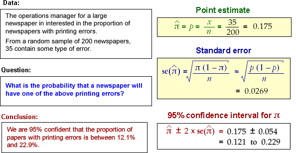

These examples give an interpretation of 95% CIs for a few data sets. Remind the students that:
We cannot tell whether any single CI is one of the 'lucky' 95% that include π
However the method of obtaining 95% CIs works 95% of the time.
Being right most of the time is the best one can hope for, since there is always the possibility of being misled by an unlucky sample.
The data sets are described in the diagrams.